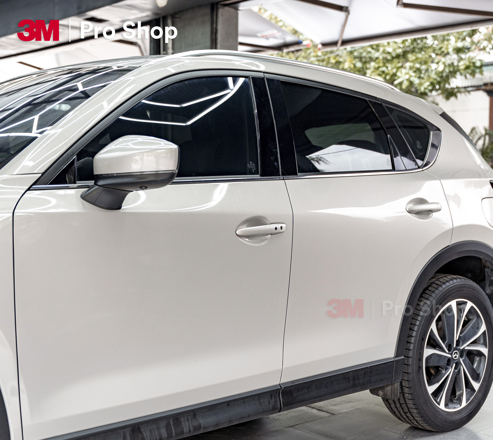
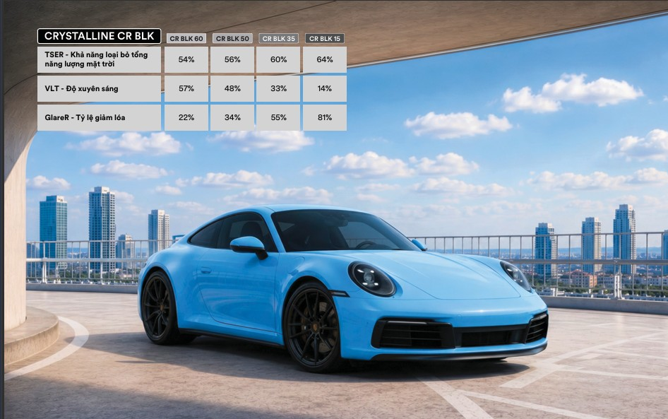
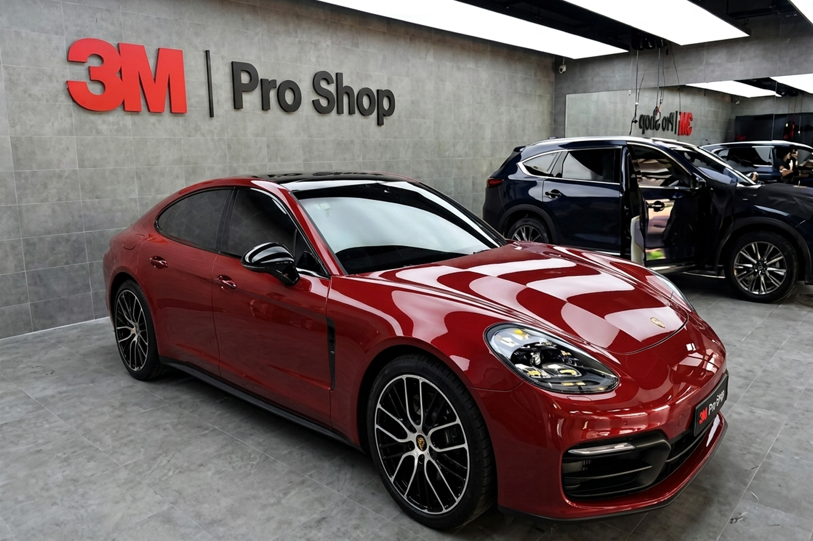
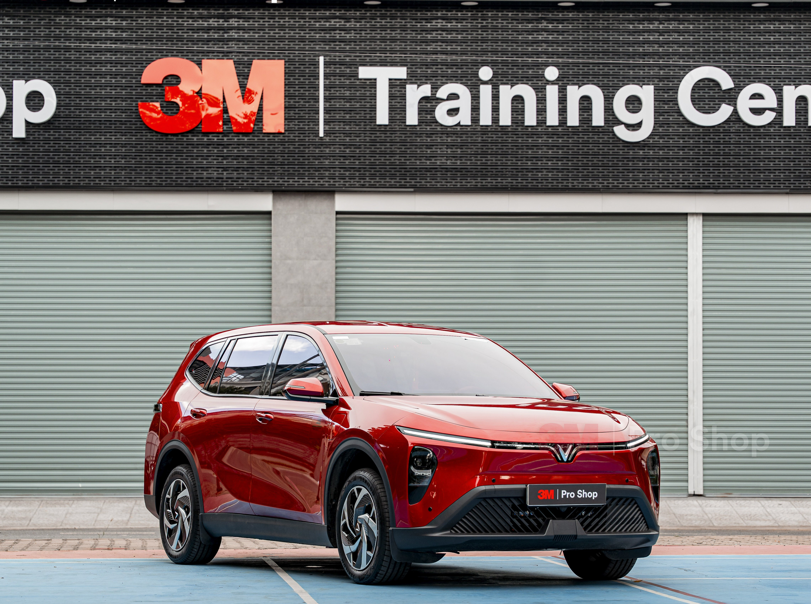
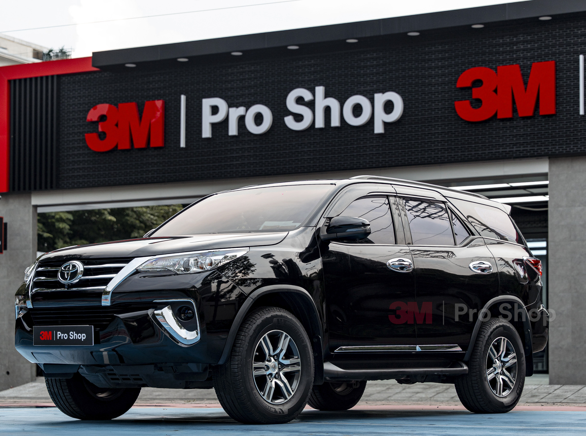
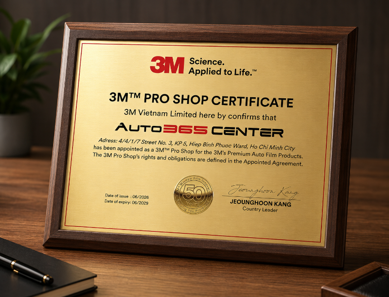

Phim cách nhiệt 3M Crystalline CR BLK: bảng giá, thông số và cách chọn mã

3M Crystalline CR BLK là dòng phim cách nhiệt ô tô cao cấp từ tập đoàn 3M (Mỹ) — thương hiệu phát minh ra phim cách nhiệt ô tô đầu tiên trên thế giới vào năm 1966. Dòng phim này sử dụng công nghệ quang học đa lớp kết hợp nano gốm, cho khả năng cản nhiệt tốt, giảm chói hiệu quả và giữ kính lái sáng, dễ quan sát — trong khi vẫn giữ ngoại hình xe đen sẫm.
Loại bỏ tổng năng lượng mặt trời
Loại bỏ hồng ngoại dải rộng
Loại bỏ tia cực tím
Nhiều mức truyền sáng

1. Phim 3M Crystalline CR BLK là gì? Công nghệ quang học đa lớp 200+ có gì khác biệt?
3M Crystalline CR BLK là dòng phim cách nhiệt ô tô thuộc phân khúc cao cấp từ tập đoàn 3M. Bằng cách kết hợp giữa công nghệ quang học đa lớp và nano gốm, dòng phim này được nghiên cứu để giải quyết đồng thời bài toán: cản nhiệt hiệu quả, giảm chói dịu mắt mà không cần làm kính lái quá tối, giúp tài xế duy trì tầm nhìn phù hợp khi lái xe.
Gói phim CR BLK tại Auto365 gồm 5 mã: CR BLK 60, CR BLK 50, CR BLK 40, CR BLK 35 và CR BLK 15. Sự linh hoạt này giúp chủ xe dễ dàng phối mã theo từng vùng kính: dùng các mã sáng (CR BLK 60/50/40) cho kính lái và sườn trước để bảo đảm an toàn quan sát, và các mã tối hơn (CR BLK 35/15) cho kính sườn sau, kính hậu hoặc cửa sổ trời để tối ưu hóa tính riêng tư và giảm nhiệt.
Công nghệ quang học đa lớp 200+ của 3M Crystalline CR BLK có gì khác biệt?
Điểm nổi bật của 3M Crystalline CR BLK nằm ở cấu trúc phim quang học đa lớp với hơn 200 lớp trong một tấm phim siêu mỏng. Công nghệ này hỗ trợ phản xạ nhiệt tốt và giữ khả năng quan sát tối ưu. Đặc biệt, nhờ không sử dụng kim loại theo định hướng truyền thông an toàn của hãng, phim hạn chế được nguy cơ ăn mòn, oxy hóa và giảm thiểu tối đa việc ảnh hưởng đến các tín hiệu GPS, VETC hay sóng điện thoại.
Nói dễ hiểu, CR BLK không chỉ dựa vào việc làm kính tối để tạo cảm giác mát. Dòng phim này được thiết kế để kiểm soát nhiệt, giảm chói và bảo vệ tia UV trong khi vẫn duy trì trải nghiệm kính sáng hơn cho các vị trí cần tầm nhìn như kính lái. Đây là lợi thế quan trọng với những người thường xuyên chạy đêm, đi mưa, đi cao tốc hoặc không muốn kính lái bị tối gắt sau khi dán phim.
Ngoài hiệu năng, màu phim đen/xám của CR BLK cũng giúp xe có ngoại hình liền mạch, hiện đại và thuộc phân khúc cao hơn. Với các dòng Sedan, SUV, CUV hoặc MPV gia đình, việc phối mã sáng ở kính lái và mã tối hơn ở khoang sau sẽ tạo được sự cân bằng giữa an toàn quan sát, chống nóng và thẩm mỹ.

2. Bảng thông số kỹ thuật 3M Crystalline CR BLK
Thông số kỹ thuật là thước đo chính xác nhất cho hiệu năng cách nhiệt, chống tia UV và độ trong suốt của phim. Dưới đây là bảng thông số chi tiết của các mã phim 3M Crystalline CR BLK (CR BLK 60, CR BLK 50, CR BLK 40, CR BLK 35, CR BLK 15) chính hãng, giúp chủ xe dễ dàng đối chiếu và lựa chọn cấu hình phù hợp với từng vị trí kính.
| Thông số | CR BLK 60 | CR BLK 50 | CR BLK 40 | CR BLK 35 | CR BLK 15 |
|---|---|---|---|---|---|
| TSER - Khả năng loại bỏ tổng năng lượng mặt trời | 54% | 56% | 58% | 60% | 64% |
| IRER* - Khả năng loại bỏ năng lượng hồng ngoại (780 - 2.500 nm) | 67% | 68% | 67% | 67% | 66% |
| VLT - Độ truyền sáng | 57% | 48% | 48%*** | 33% | 14% |
| UVR - Khả năng loại bỏ tia cực tím | 99.9% | 99.9% | 99.9% | 99.9% | 99.9% |
| Tỷ lệ giảm chói | 22% | 34% | 44% | 55% | 81% |
| IRR** - Khả năng loại bỏ tia hồng ngoại (900 - 1.000 nm) | 97% | 98% | 98% | 98% | 98% |
Gợi ý đọc thông số: VLT càng cao thì kính càng sáng và dễ quan sát hơn. TSER càng cao thì khả năng cản tổng năng lượng mặt trời càng tốt. Tỷ lệ giảm chói càng cao thì kính càng dịu mắt nhưng cũng sẽ tối hơn.
* IRER – Tỷ lệ phần trăm năng lượng hồng ngoại mặt trời bị loại bỏ trong phạm vi bước sóng từ 780 – 2,500 nm. IRER tính đến năng lượng hồng ngoại được truyền và hấp thụ sẽ được phát lại vào bên trong xe. Dữ liệu hiển thị là hiệu suất của phim khi được dán lên kính.
** IRR – Tỷ lệ phần trăm năng lượng hồng ngoại mặt trời trong phạm vi bước sóng từ 900 – 1,000 nm bị loại bỏ bởi phim. Đo lường được thực hiện trên phim chỉ với lớp lót (tức là không có kính).
*** CR BLK 40 - Tỷ lệ truyền sáng 48% dựa vào kết quả đo thực tế trên phim tại thị trường Việt Nam.
LƯU Ý: Quy định về dán phim cách nhiệt cho kính ô tô thay đổi tùy theo từng quốc gia. Hãy kiểm tra quy định tại nơi bạn sống hoặc hỏi đại lý để biết các loại phim được phép sử dụng trên xe.

Bạn muốn kiểm tra chất lượng phim cách nhiệt hiện tại trên xe?
Auto365 hỗ trợ đo thử độ truyền sáng (VLT), tỷ lệ cản tia hồng ngoại (IRR) và tia cực tím (UVR) bằng thiết bị chuyên dụng miễn phí.
3. Bảng giá phim cách nhiệt 3M Crystalline CR BLK chính hãng
Gói phim cách nhiệt 3M Crystalline CR BLK phù hợp với chủ xe muốn nâng cấp dòng phim ưu tiên độ trong và tầm nhìn rõ nét, kính sáng dễ chịu, khả năng chống nóng tốt và bảo hành điện tử chính hãng 10 năm.
| Dòng xe | Giá dán trọn xe | Cấu hình gợi ý |
|---|---|---|
| Minicar Xe đô thị cỡ nhỏ, xe điện mini |
12.200.000 VNĐ | Kính lái CR BLK 60 + Kính sườn & Lưng CR BLK 35 |
| 12.900.000 VNĐ | Kính lái CR BLK 40 + Kính sườn & Lưng CR BLK 35/15 | |
| Sedan Sedan 4-5 chỗ, xe đô thị |
14.800.000 VNĐ | Kính lái CR BLK 50/60 + Kính sườn & Lưng CR BLK 35/15 |
| 15.500.000 VNĐ | Kính lái CR BLK 40 + Kính sườn & Lưng CR BLK 35/15 | |
| SUV / CUV Xe 5-7 chỗ, xe gầm cao |
17.600.000 VNĐ | Kính lái CR BLK 50/60 + Kính sườn sau & Lưng CR BLK 15 |
| 18.300.000 VNĐ | Kính lái CR BLK 40 + Kính sườn & Lưng CR BLK 35/15 |
| Vị trí kính | Mã phim gợi ý | Giá dán lẻ | Gợi ý sử dụng |
|---|---|---|---|
| Kính lái | CR BLK 50 / CR BLK 60 | 5.700.000 VNĐ | Ưu tiên tầm nhìn sáng, dễ quan sát khi lái xe ban đêm hoặc trời mưa. |
| CR BLK 40 | 6.500.000 VNĐ | Tông màu tối hơn, tăng tính riêng tư và khả năng cách nhiệt tốt hơn cho kính lái. | |
| Kính sườn | CR BLK 15 / CR BLK 35 | 2.600.000 VNĐ | Cân bằng giữa khả năng giảm chói, tính riêng tư và thẩm mỹ bên ngoài xe. |
| Kính lưng | CR BLK 15 / CR BLK 35 | 4.100.000 VNĐ | Phù hợp khoang sau, hỗ trợ giảm chói và tăng sự riêng tư cho người ngồi sau. |
| Cửa sổ trời / Panorama | CR BLK 15 / CR BLK 35 | từ 1.300.000 VNĐ (tùy kích thước) | Cửa sổ trời nhỏ tính bằng 1 kính sườn, Panorama tính bằng 1 kính lái. |
Chuỗi hệ thống nâng cấp xe Auto365 toàn quốc
Auto365 tự hào là chuỗi hệ thống nâng cấp xe lớn nhất Việt Nam với hơn 90+ đại lý trải dài toàn quốc, sở hữu phòng dán phim chuyên dụng đạt chuẩn và đội ngũ kỹ thuật viên được đào tạo bài bản từ 3M Việt Nam.
4. Ưu điểm nổi bật của 3M Crystalline CR BLK
Khi chọn phim cách nhiệt cao cấp, khách hàng thường quan tâm đến 5 yếu tố: khả năng chống nóng, độ sáng kính lái, giảm chói, bảo vệ tia UV và độ ổn định khi sử dụng thiết bị kết nối trên xe. 3M Crystalline CR BLK được định vị để xử lý đồng thời các nhu cầu này, đặc biệt phù hợp với khách hàng muốn nâng cấp trải nghiệm lái xe mà vẫn giữ vẻ ngoài sang trọng cho xe.
Cản nhiệt hiệu quả, tăng sự thoải mái
Phim cách nhiệt 3M Crystalline CR BLK có khả năng hỗ trợ cản đến 64% tổng năng lượng mặt trời và cản 97% - 98% tia hồng ngoại (nguồn sinh nhiệt). Nhờ hiệu quả cách nhiệt, khoang cabin luôn mát mẻ dễ chịu, giảm tải cho hệ thống điều hòa, hỗ trợ tiết kiệm nhiên liệu.
Độ trong suốt cao, giảm chói tốt
Công nghệ quang học đa lớp giúp ánh sáng đi qua phim được chọn lọc nhằm giảm chói hiệu quả mà không làm ảnh hưởng nhiều đến tầm nhìn. Điều này đặc biệt quan trọng đối với người lái xe, giúp nâng cao khả năng quan sát và hỗ trợ giảm lóa từ đèn pha đối diện khi di chuyển vào ban đêm.
Chống 99.9% tia UV, hỗ trợ bảo vệ sức khỏe
Với khả năng ngăn chặn đến 99.9% tia cực tím (UV) có hại, phim giúp giảm thiểu cảm giác nóng rát da khi đi nắng, bảo vệ làn da khỏi tác động tiêu cực của ánh nắng mặt trời và hỗ trợ bảo vệ sức khỏe đôi mắt cho người sử dụng.
Kéo dài tuổi thọ và vẻ đẹp cho nội thất
Nhờ tính năng hỗ trợ loại bỏ tia UV và tia hồng ngoại hiệu quả, phim giúp hạn chế tình trạng bay màu, nứt nẻ hoặc bong tróc của các chi tiết nội thất nhựa và da (như taplo, ghế da), góp phần duy trì giá trị thẩm mỹ bền lâu cho xe.
Tăng tính thẩm mỹ và riêng tư cho xe
Màu đen xanh (Neutral Blue Black) hiện đại hòa hợp tự nhiên với màu kính nguyên bản của xe, mang lại vẻ ngoài tinh tế và sang trọng. Sự linh hoạt trong phối các mã phim (như CR BLK 15, 35, 40, 50, 60) giúp tối ưu độ riêng tư cho khoang sau mà vẫn đảm bảo độ sáng cho kính lái.
Hạn chế ảnh hưởng sóng điện từ
Nhờ cấu tạo phi kim loại (non-metallized), phim được thiết kế để hạn chế ảnh hưởng đến các loại sóng điện thoại, GPS, Wi-Fi, bluetooth và thẻ thu phí tự động VETC/ETC, đảm bảo kết nối thông suốt khi di chuyển.

Vì sao CR BLK phù hợp với kính lái cao cấp?
Kính lái là vị trí cần ưu tiên tầm nhìn, nhất là khi chạy ban đêm, đi mưa hoặc di chuyển trên đường thiếu sáng. Với các mã như CR BLK 60, CR BLK 50 và CR BLK 40, chủ xe có thể giữ cảm giác quan sát tốt, đồng thời tăng cường khả năng chống nóng hiệu quả và giảm chói tối ưu cho kính lái.
Vì sao CR BLK phù hợp với xe gia đình và xe thường đi xa?
Với xe gia đình, khoang sau thường có trẻ em, người lớn tuổi hoặc hành khách cần sự dễ chịu khi đi đường dài. Việc phối CR BLK 35 hoặc CR BLK 15 cho kính sườn sau và kính lưng giúp tăng riêng tư, giảm chói và làm khoang xe dịu mắt hơn. Trong khi đó, kính lái vẫn nên giữ mã sáng để bảo đảm khả năng quan sát cho người lái.
Khả năng bảo vệ nội thất khi xe thường xuyên đỗ nắng
Tia UV, ánh sáng nhìn thấy và nhiệt đều góp phần làm nội thất xe xuống cấp theo thời gian. Phim cách nhiệt được thiết kế để hỗ trợ giảm thiểu tác động từ tia UV và nhiệt mặt trời. Với các xe thường xuyên đỗ ngoài trời, việc chọn phim có khả năng cản UV cao và phối mã phù hợp cho từng vị trí kính là một cách giúp bảo vệ taplo, ghế da, tapi cửa và các chi tiết nhựa tốt hơn.
3M Crystalline CR BLK phù hợp với ai?
3M Crystalline CR BLK phù hợp với chủ xe muốn nâng cấp phim cách nhiệt theo hướng ưu tiên độ trong và tầm nhìn, chú trọng tầm nhìn kính lái, độ trong, khả năng hỗ trợ bảo vệ tia UV và độ hoàn thiện tổng thể của xe. Đây là lựa chọn đáng cân nhắc với những khách hàng muốn phim 3M thuộc phân khúc cao hơn gói 3M Ceramic NR (Ceramic Hybrid), nhưng vẫn cần phối mã linh hoạt (phối các mã CR BLK 60, 50, 40, 35, 15) cho từng vị trí kính.
- Người ưu tiên kính lái sáng và đầm màu vừa phải (CR BLK 60, CR BLK 50, CR BLK 40), dễ quan sát khi chạy đêm hoặc trời mưa.
- Người thường xuyên đi đường dài, chạy cao tốc hoặc đỗ xe ngoài trời.
- Chủ xe Sedan, SUV, MPV, xe gia đình phân khúc cao hoặc xe cần ngoại hình sang hơn.
- Người muốn dòng phim 3M thuộc phân khúc cao hơn so với gói 3M Ceramic NR (Ceramic Hybrid).
- Chủ xe muốn tăng thẩm mỹ, giảm chói và hỗ trợ bảo vệ nội thất tốt hơn.
5. Nên chọn mã phim 3M Crystalline CR BLK nào cho từng vị trí kính?
| Vị trí kính | Mã phim gợi ý | Tư vấn thực tế |
|---|---|---|
| Kính lái | CR BLK 60 / CR BLK 50 / CR BLK 40 | Ưu tiên tầm nhìn sáng (CR BLK 60/50) hoặc nâng cấp khả năng cản nhiệt, tăng riêng tư cho kính lái (CR BLK 40). |
| Kính sườn trước | CR BLK 50 / CR BLK 40 / CR BLK 35 | Cân bằng giữa độ sáng, khả năng giảm chói và mức độ riêng tư. |
| Kính sườn sau | CR BLK 35 / CR BLK 15 | Phù hợp nếu muốn khoang sau riêng tư hơn và giảm chói tốt hơn. |
| Kính lưng | CR BLK 35 / CR BLK 15 | Có thể chọn mã tối hơn nếu xe thường xuyên đỗ nắng hoặc chở người ngồi sau. |
| Cửa sổ trời / Panorama | CR BLK 35 / CR BLK 15 | Nên xem mẫu thực tế theo kích thước kính và mức nắng xe thường gặp. |
Bảng gợi ý chọn mã phim theo từng vị trí kính
Bảng trên là cấu hình tham khảo giúp chủ xe chọn nhanh mã CR BLK theo từng vùng kính. Với kính lái, nên ưu tiên độ truyền sáng cao để giữ tầm quan sát. Với kính sườn sau, kính lưng và cửa sổ trời, có thể chọn mã tối hơn nếu muốn tăng riêng tư và giảm chói.

3M Crystalline CR BLK 60 phù hợp kính lái như thế nào?
CR BLK 60 có độ truyền sáng 57%, là mã sáng trong nhóm CR BLK. Mã này phù hợp với chủ xe ưu tiên kính lái sáng rõ, thường xuyên chạy đêm, trời mưa, đường thiếu sáng hoặc đi đường dài. Nếu khách hàng muốn kính lái dễ nhìn và ít thay đổi cảm giác quan sát, CR BLK 60 là lựa chọn dễ dùng.
3M Crystalline CR BLK 50 phù hợp ai?
CR BLK 50 có độ truyền sáng 48%, phù hợp với người muốn kính lái hoặc kính sườn trước dịu nắng hơn nhưng vẫn giữ tầm nhìn tốt. Đây là lựa chọn cân bằng giữa độ sáng, khả năng giảm chói và cảm giác lái dễ chịu. Chủ xe nên xem mẫu thực tế trước khi chọn nếu thường xuyên chạy đêm hoặc đi mưa.
3M Crystalline CR BLK 40 phù hợp ai?
CR BLK 40 có độ truyền sáng khoảng 48% (khi đo thực tế trên phim), phù hợp cho những ai muốn dán kính lái nhưng yêu cầu khả năng cách nhiệt vượt trội (TSER 58%) và giảm chói tốt hơn (44%) so với mã CR BLK 50/60. Đây là giải pháp phù hợp cho chủ xe muốn kính lái có tông màu đầm ấm, kín đáo hơn từ bên ngoài mà vẫn duy trì tầm nhìn tốt, an toàn khi di chuyển trong mọi điều kiện thời tiết.
3M Crystalline CR BLK 35 phù hợp kính sườn và kính lưng ra sao?
CR BLK 35 có độ truyền sáng 33%, phù hợp cho kính sườn trước, kính sườn sau hoặc kính lưng nếu chủ xe muốn tăng cảm giác dịu nắng, giảm chói và giữ khoang xe riêng tư hơn. Đây là mã cân bằng cho nhiều dòng Sedan, SUV, CUV và xe gia đình.
3M Crystalline CR BLK 15 có nên dán kính lái không?
Không nên dán CR BLK 15 cho kính lái vì độ truyền sáng chỉ 14%, có thể ảnh hưởng đến khả năng quan sát, đặc biệt khi chạy ban đêm, trời mưa hoặc đường thiếu sáng. CR BLK 15 phù hợp hơn cho kính sườn sau, kính lưng hoặc cửa sổ trời khi chủ xe muốn tăng riêng tư và giảm chói mạnh.
Vì sao không nên chọn cùng một mã phim cho toàn bộ xe?
Mỗi vị trí kính có nhiệm vụ khác nhau. Kính lái cần độ truyền sáng cao để người lái quan sát tốt; kính sườn trước cần nhìn gương chiếu hậu rõ; kính sườn sau, kính lưng và cửa sổ trời lại thường cần giảm chói, chống nắng và tăng riêng tư. Vì vậy, cấu hình phù hợp thường là phối nhiều mã phim thay vì dán một mã duy nhất cho toàn bộ xe.
Với 3M Crystalline CR BLK, cách phối phổ biến là dùng CR BLK 60, CR BLK 50 hoặc CR BLK 40 cho kính lái, sau đó dùng CR BLK 35 hoặc CR BLK 15 cho thân xe và khoang sau tùy nhu cầu riêng tư và điều kiện lái xe.
Các gói phim cách nhiệt 3M chính hãng nổi bật tại Auto365
Bên cạnh dòng 3M Crystalline CR BLK, Auto365 cung cấp đa dạng các dòng phim cách nhiệt 3M chính hãng khác để đáp ứng tốt nhất theo ngân sách và nhu cầu sử dụng của bạn:
3M Ceramic NR
3M Crystalline CR BLK
3M Crystalline Hybrid
3M Ceramic IR
6. Chọn cấu hình 3M Crystalline CR BLK theo nhu cầu: đi phố, đi xa, gia đình hay riêng tư?
Không có một cấu hình 3M Crystalline CR BLK cố định cho mọi dòng xe. Kính lái cần ưu tiên tầm nhìn, kính sườn trước cần dễ quan sát gương, còn kính sườn sau, kính lưng và cửa sổ trời có thể ưu tiên giảm chói, chống nóng và riêng tư. Bảng dưới đây giúp chủ xe chọn nhanh cấu hình phù hợp theo thói quen sử dụng thực tế.
| Nhu cầu sử dụng | Cấu hình khuyên dùng | Phù hợp với ai? |
|---|---|---|
| Ưu tiên kính lái sáng, dễ chạy đêm | Kính lái CR BLK 60 + kính sườn/kính lưng CR BLK 35 | Người thường xuyên chạy đêm, đi mưa, đi đường dài hoặc không muốn kính lái bị tối. |
| Cân bằng chống nóng và tầm nhìn | Kính lái CR BLK 50 + kính sườn CR BLK 35 + kính lưng CR BLK 35/15 | Chủ xe sedan, SUV, CUV dùng xe hằng ngày, muốn xe dịu nắng hơn nhưng vẫn dễ quan sát. |
| Ưu tiên cách nhiệt kính lái, riêng tư hơn | Kính lái CR BLK 40 + kính sườn/kính lưng CR BLK 35/15 | Chủ xe muốn nâng cao khả năng cản nhiệt kính lái, thích kính lái đầm màu và cần độ riêng tư cao hơn. |
| Khoang sau riêng tư hơn | Kính lái CR BLK 40/50/60 + kính sườn sau/kính lưng CR BLK 15 | Xe gia đình, xe chở trẻ nhỏ, xe thường có người ngồi hàng ghế sau hoặc cần ngoại hình tối sang. |
| Xe Minicar / xe điện mini | Kính lái CR BLK 60 + kính sườn/kính lưng CR BLK 35 | Xe nhỏ, khoang cabin gọn, cần giữ tầm nhìn sáng và hạn chế cảm giác bí khi dán phim. |
| SUV / CUV có diện tích kính lớn | Kính lái CR BLK 40/50/60 + kính sườn sau, kính lưng CR BLK 35/15 | Xe thường đi nắng, kính lớn, cần giảm chói và tăng sự dễ chịu cho khoang sau. |
| Xe có cửa sổ trời / panorama | Cửa sổ trời CR BLK 35 hoặc CR BLK 15 | Xe có kính nóc lớn, thường bị nắng chiếu trực tiếp từ phía trên, cần giảm chói và giảm nóng. |
Nếu chưa chắc nên chọn CR BLK 60, 50, 40, 35 hay 15, chủ xe nên xem mẫu phim thực tế trên kính xe trước khi quyết định. Với kính lái, Auto365 khuyến nghị ưu tiên độ sáng và khả năng quan sát; với khoang sau, có thể chọn mã tối hơn để tăng riêng tư và giảm chói.
Ưu tiên CR BLK 60 cho kính lái.
Cân nhắc CR BLK 40 cho kính lái.
Chọn CR BLK 50 cho kính lái và CR BLK 35 cho thân xe.
Chọn CR BLK 15 cho kính sườn sau hoặc kính lưng.
Thiết kế gói dán 3M Crystalline CR BLK tối ưu cho xế cưng
Mỗi dòng xe và nhu cầu di chuyển đều cần một cách phối mã phim khác nhau. Nhận ngay giải pháp phối mã phim từ chuyên gia Auto365.
7. So sánh 3M Crystalline CR BLK với các nhóm phim khác trên thị trường
Trên thị trường phim cách nhiệt ô tô hiện nay, khách hàng thường gặp nhiều nhóm phim khác nhau như phim nhuộm màu, phim kim loại, phim nano ceramic, phim hybrid và phim quang học đa lớp. Mỗi nhóm có ưu điểm riêng, nhưng cũng có giới hạn về độ trong, khả năng giảm chói, độ bền màu, mức ảnh hưởng đến thiết bị kết nối và chi phí đầu tư.
3M Crystalline CR BLK thuộc nhóm dòng phim ưu tiên độ trong và tầm nhìn, nổi bật nhờ công nghệ phim quang học đa lớp kết hợp nano gốm. Điểm mạnh của dòng này không chỉ nằm ở khả năng chống nóng, mà còn ở trải nghiệm kính lái: kính sáng hơn, dễ quan sát hơn, màu phim sang và phù hợp với các xe gia đình phân khúc cao, Sedan, SUV, CUV hoặc xe thường xuyên đi xa.
| Tiêu chí | 3M Crystalline CR BLK | Phim nano ceramic phổ thông | Phim kim loại phổ thông |
|---|---|---|---|
| Phân khúc | Cao cấp | Trung cấp đến cận cao cấp | Phổ thông đến trung cấp |
| Công nghệ cốt lõi | Quang học đa lớp (200+ lớp) kết hợp nano gốm cao cấp | Nano Ceramic phủ gốm hấp thụ nhiệt | Tráng phủ kim loại hoặc phản quang |
| Cơ chế cách nhiệt | Phản xạ nhiệt (phản xạ năng lượng mặt trời ra ngoài, kính ít bị nóng, cản nhiệt bền bỉ) | Hấp thụ nhiệt (giữ nhiệt trên kính, kính rất nóng khi đỗ lâu, dễ tỏa nhiệt ngược vào trong cabin) | Hấp thụ kết hợp phản xạ gương (gây chói cho xe đi đối diện) |
| Trải nghiệm kính lái & Tầm nhìn | Kính cực trong, không lóa, tầm nhìn sắc nét cả ngày lẫn đêm/mưa lớn. Tông màu đen xanh dịu mắt, dễ quan sát hơn mã cũ. | Độ trong trung bình, một số dòng bị ngả vàng hoặc đục nhẹ khi đi dưới nắng gắt | Có hiện tượng phản gương trên tablo hoặc lóa mờ khi đi ban đêm |
| Khả năng giảm chói | Cực tốt (tự động điều chỉnh khúc xạ, chống chói lóa từ đèn pha ngược chiều hiệu quả) | Khá tốt (chủ yếu giảm chói bằng cách nhuộm màu phim tối đi) | Trung bình (dễ gây phản xạ ánh sáng ngược vào mắt tài xế) |
| Ảnh hưởng sóng & GPS | Hạn chế ảnh hưởng sóng (Phi kim loại, được thiết kế để hạn chế ảnh hưởng đến GPS, 4G/5G, thẻ thu phí ePass/VETC) | Hầu như không ảnh hưởng | Có thể gây nhiễu hoặc chặn sóng GPS, radar, sóng di động và khó nhận diện thẻ VETC/ePass |
| Độ bền bề mặt | Lớp chống trầy xước siêu cứng thế hệ mới (hạn chế tối đa xước dăm khi lau chùi/vệ sinh kính) | Dễ bị trầy xước nếu lau bằng khăn cứng hoặc gạt nước có cát dăm | Bề mặt dễ bong tróc, oxy hóa sau 2-3 năm sử dụng |
8. Chính sách bảo hành & Cách xác thực phim 3M Crystalline CR BLK thật - giả
Bảo hành điện tử 10 năm & Quy trình nghiệm thu
Phim cách nhiệt 3M Crystalline CR BLK được bảo hành điện tử chính hãng 10 năm khi thi công đúng quy trình tại hệ thống đại lý ủy quyền. Sau khi dán, chủ xe cần kiểm tra nghiệm thu các hạng mục sau để đảm bảo quyền lợi:
- Thông tin hệ thống: Tra cứu đúng mã phim ở từng vị trí kính, thông tin xe/khách hàng, thời hạn bảo hành điện tử và phiếu/tem xác nhận đi kèm.
- Chất lượng thi công: Kiểm tra bề mặt phim phẳng, mép phim sắc nét, không bị bọt nước hay bụi bám, cùng kết quả đo kiểm thông số thực tế (nếu có).
Hướng dẫn nhanh cách xác thực phim 3M thật - giả
- Quan sát hiệu ứng màu sắc bằng mắt thường: Tấm phim 3M Crystalline CR BLK chính hãng có màu đen xanh trung tính (Neutral Blue Black) dịu mắt hơn. Sau khi dán lên ô tô, kính xe sẽ không bị thay đổi màu sắc quá nhiều mà giữ được tông màu tự nhiên, đồng nhất với màu kính nguyên bản của xe kể cả khi di chuyển dưới trời nắng gắt. Đặc biệt, khi đi dưới trời mưa hoặc xịt nước lên mặt kính ngoài, phim chính hãng sẽ ánh lên sắc đỏ hồng/tím đặc trưng của công nghệ quang học đa lớp từ 3M.
- Đo kiểm hiệu năng thực tế bằng thiết bị chuyên dụng: Để đảm bảo tính minh bạch, chủ xe nên yêu cầu kỹ thuật viên sử dụng máy đo quang phổ chuyên dụng để đo trực tiếp các thông số kỹ thuật ngay trên mặt kính xe sau khi dán. Các chỉ số như độ truyền sáng (VLT), tỷ lệ cản tia hồng ngoại (IRR) và tỷ lệ ngăn chặn tia cực tím (UVR) phải đạt độ chuẩn xác tương thích với bảng thông số kỹ thuật của từng mã phim mà hãng công bố (CR BLK 15, 35, 40, 50, 60).
- Chế độ bảo hành điện tử e-Warranty: Phim cách nhiệt 3M chính hãng bắt buộc phải được kích hoạt bảo hành điện tử trên hệ thống e-Warranty toàn cầu của 3M. Chủ xe cần yêu cầu đại lý cung cấp mã số bảo hành để tự tra cứu trực tuyến để xác thực chính xác mã phim dán tại từng vị trí kính và thời hạn bảo hành 10 năm.
- Kiểm tra nguồn gốc xuất xứ và chứng nhận đại lý: Các trung tâm phân phối chính hãng phải sở hữu Giấy chứng nhận đại lý ủy quyền của 3M (3M Authorized Distributor) còn hiệu lực và có hóa đơn nhập khẩu chính thức của sản phẩm để cam kết chất lượng.
9. Quy trình dán phim cách nhiệt 3M Crystalline CR BLK tại Auto365
Quy trình dán phim cách nhiệt chuyên nghiệp là yếu tố quyết định đến độ bền và hiệu năng cản nhiệt của phim. Tại Auto365, gói phim cách nhiệt cao cấp 3M Crystalline CR BLK được thi công khép kín trong phòng kín máy lạnh đạt chuẩn, giúp hạn chế tối đa bụi mịn bám vào bề mặt kính. Đội ngũ kỹ thuật viên giàu kinh nghiệm thực hiện tỉ mỉ từng bước theo quy trình dán phim cách nhiệt tiêu chuẩn của 3M toàn cầu để đảm bảo tính thẩm mỹ và độ bền tối đa cho xế cưng của bạn.
| Bước | Nội dung thực hiện |
|---|---|
| 1. Tiếp nhận xe và tư vấn | Xác định dòng xe, nhu cầu chống nóng, tầm nhìn, riêng tư và ngân sách. |
| 2. Chọn mã phim | Tư vấn CR BLK 60, CR BLK 50, CR BLK 40, CR BLK 35 và CR BLK 15 theo từng vị trí kính. |
| 3. Kiểm tra kính | Kiểm tra phim cũ, tình trạng kính và cửa sổ trời nếu có. |
| 4. Vệ sinh bề mặt | Làm sạch kính để hạn chế bụi, bọt và lỗi thi công. |
| 5. Cắt phim và tạo form | Căn phim theo từng vị trí kính trên xe. |
| 6. Thi công dán phim | Dán phim, gạt nước, xử lý mép và hoàn thiện bề mặt. |
| 7. Nghiệm thu | Kiểm tra bọt nước, bụi, mép phim và tầm nhìn sau thi công. |
| 8. Kích hoạt bảo hành | Hỗ trợ khách hàng kiểm tra và kích hoạt bảo hành điện tử 10 năm. |

10. Địa chỉ dán phim 3M Crystalline CR BLK chính hãng
Để sở hữu đúng mã phim (CR BLK 15, CR BLK 35, CR BLK 40, CR BLK 50, CR BLK 60) và đầy đủ giấy tờ CO-CQ, chủ xe nên chọn các địa chỉ thuộc hệ thống ủy quyền ký kết trực thuộc 365Group – Nhà phân phối phim cách nhiệt 3M chính thức tại Việt Nam:
- Auto365.vn: Hệ thống nâng cấp xe chuyên nghiệp với hơn 90 điểm thi công toàn quốc, cam kết đồng bộ về chất lượng vật liệu và tay nghề kỹ thuật viên.
- 3M Shop (3M Training Center): Trung tâm thi công và đào tạo kỹ thuật tiêu chuẩn 3M đầu tiên tại Việt Nam.

Hệ thống địa chỉ thi công chính hãng
Số 4/4/1/7 Đường Số 3, Hiệp Bình Phước, TP. Thủ Đức, TP. HCM
4/4/3/3 Đường số 3, Khu phố 31, Phường Hiệp Bình, TP. Thủ Đức, TP. HCM
Câu hỏi thường gặp về 3M Crystalline CR BLK
3M Crystalline CR BLK là gì và có mấy mã phim?
3M Crystalline CR BLK là dòng phim cách nhiệt ô tô cao cấp thuộc Crystalline Series của 3M, sử dụng công nghệ phim quang học đa lớp. Dòng phim này hướng đến người dùng muốn kính xe có tông đen xanh đầm ấm, hỗ trợ cách nhiệt, chống chói và tăng sự riêng tư tốt hơn. Gói phim CR BLK tiêu chuẩn tại Auto365 bao gồm 5 mã phim chính hãng: CR BLK 60, CR BLK 50, CR BLK 40, CR BLK 35 và CR BLK 15, mỗi mã sẽ có thông số truyền sáng và hiệu năng cản nhiệt tương ứng cho từng vị trí kính.
Thông số VLT của các mã CR BLK là bao nhiêu?
CR BLK 60 có VLT 57%, CR BLK 50 có VLT 48%, CR BLK 40 có VLT khoảng 48% (đo thực tế trên phim), CR BLK 35 có VLT 33% và CR BLK 15 có VLT 14%.
CR BLK 50 có phù hợp kính lái không?
CR BLK 50 là lựa chọn phù hợp cho kính lái nếu người dùng muốn cân bằng giữa giảm nhiệt, giảm chói và khả năng quan sát ban đêm.
CR BLK 40 có phù hợp kính lái không?
CR BLK 40 rất phù hợp cho kính lái nếu chủ xe muốn tăng khả năng chống nóng (TSER 58%) và chống chói (44%) tốt hơn mã CR BLK 50/60, đồng thời mang lại không gian riêng tư hơn cho khoang lái mà vẫn đảm bảo tầm nhìn rõ ràng khi đi đêm hay mưa gió.
Nên chọn CR BLK 60, CR BLK 50 hay CR BLK 40 cho kính lái?
CR BLK 60 phù hợp với người ưu tiên tầm nhìn sáng hơn, dễ lái xe ban đêm hoặc đi mưa. CR BLK 50 phù hợp với người muốn kính lái tối hơn một chút nhưng vẫn duy trì khả năng quan sát tốt. Còn CR BLK 40 là lựa chọn tối ưu cho những ai muốn cản nhiệt tốt, giảm chói mạnh mẽ và cần sự kín đáo, riêng tư cho khoang lái.
CR BLK 35 có tối không?
CR BLK 35 có VLT 33%, tối hơn CR BLK 60 và CR BLK 50. Mã này phù hợp hơn cho kính sườn hoặc người muốn tăng mức độ riêng tư.
CR BLK 15 nên dán vị trí nào?
CR BLK 15 phù hợp cho kính sườn sau hoặc kính hậu khi người dùng muốn tăng mức độ riêng tư cho khoang xe.
Tại sao phim 3M Crystalline CR BLK ánh lên màu đỏ hồng hoặc tím khi gặp nước?
Đây là hiện tượng quang học đặc trưng của công nghệ phim quang học đa lớp từ 3M (hơn 200 lớp siêu mỏng phản xạ ánh sáng). Khi mặt kính ngoài có nước (nước mưa hoặc nước xịt rửa xe), hiện tượng khúc xạ ánh sáng xảy ra và làm phim ánh lên sắc đỏ hồng hoặc tím rất đẹp mắt. Đây cũng là một trong những cách đơn giản nhất bằng mắt thường giúp chủ xe nhận biết, phân biệt phim 3M Crystalline chính hãng so với các dòng phim giả trên thị trường.
Phim cách nhiệt 3M Crystalline CR BLK có giúp tiết kiệm nhiên liệu không?
Có. Nhờ khả năng cản nhiệt vượt trội (loại bỏ đến 64% tổng năng lượng mặt trời và cản 98% tia hồng ngoại), phim giúp giảm đáng kể nhiệt lượng truyền vào trong xe khi đỗ hoặc di chuyển dưới trời nắng gắt. Nhờ đó, hệ thống điều hòa không phải hoạt động hết công suất liên tục, giúp giảm tải động cơ (tiết kiệm xăng/dầu cho xe truyền thống) và tiết kiệm dung lượng pin (kéo dài cự ly di chuyển cho xe điện).
CR BLK có ảnh hưởng GPS hoặc VETC không?
3M Crystalline CR BLK sử dụng công nghệ phim quang học đa lớp, không sử dụng kim loại theo định hướng truyền thông an toàn. Trong điều kiện sử dụng thông thường, phim được thiết kế để hạn chế ảnh hưởng đến các tín hiệu như GPS, VETC hoặc sóng điện thoại. Tuy nhiên, trải nghiệm thực tế có thể thay đổi tùy thiết bị, vị trí lắp đặt và điều kiện sử dụng.
Đang phân vân nên chọn
CR BLK 60, 50, 40, 35 hay 15?
Đội ngũ Auto365 sẽ tư vấn cấu hình phim cách nhiệt 3M Crystalline CR BLK theo dòng xe, thói quen lái xe, nhu cầu chống nóng, độ riêng tư và ngân sách.
- Đo kiểm thông số phim thực tế bằng máy chuyên dụng.
- Tư vấn phối phim theo từng vị trí kính.
- Thi công bởi kỹ thuật viên chuyên nghiệp.
- Hỗ trợ kích hoạt bảo hành điện tử 3M e-Warranty 10 năm.